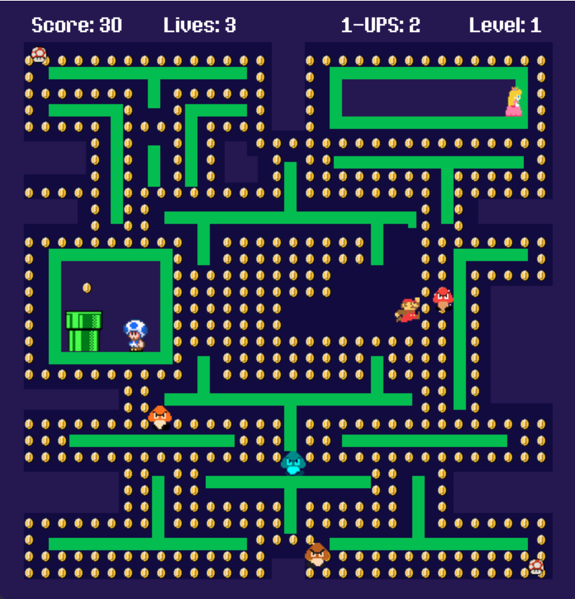
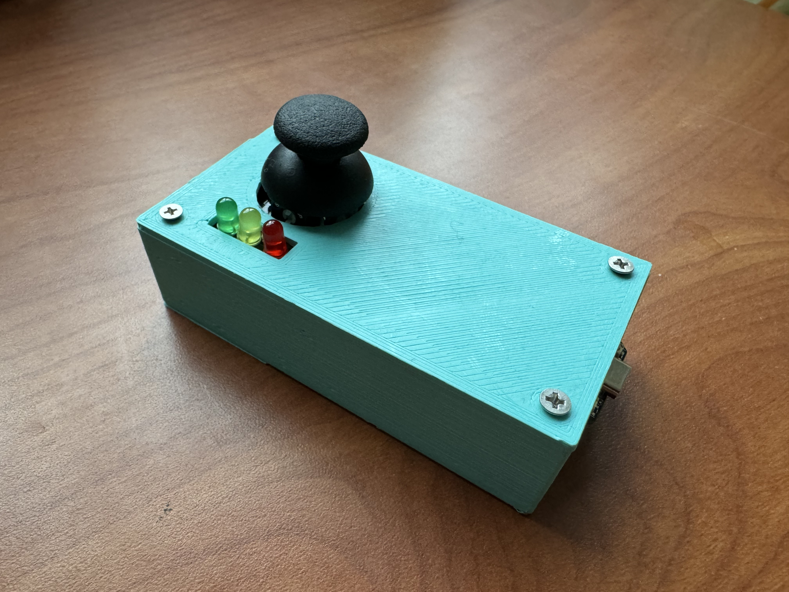

Module 2: Interactive Devices Blog




Project overview
The goal of this project was to make an interactive art installation involving a TTGO T-Display and several input/feedback interfaces. I chose to revamp an old video game I made at the end of high school with a responsive game controller. My inspiration was restoring a game I made 5 years ago and adding to my first attempt at a programming project with the knowledge I have gained since going through college as a computer science major.
My system allows the player to control an 8-bit Super Mario character in a Pac-Man game. The player must collect all the coins on the screen while trying to not get hit by the Goombas (ghosts) and collect 1-UPS distributed across the map to help with this mission. As the player completes levels, the Goombas get faster.
The joystick controller button is used to click through the navigational and instructional screens of the game. Three LED lights on the controller respond to different actions during gameplay. The red LED light turns on every time the player gets hit by a Goomba, the yellow LED light every time the player collects a coin, and the green LED light every time the player gets a 1-UP.
DocumentationArtistic vision
I wanted to create a sleek and intuitive controller for my game. I chose to 3D print the enclosure for my controller to obscure the wiring of my device, only exposing the joystick, LED lights, and USB-C port.
My goal was for people to be able to walk up to my device and play the game on the screen without any specific instructions, thus I chose to only use a joystick as the point of interaction.
I also wanted to send data back to the controller for a complete interaction loop, which is why I also chose to incorporate the LED feedback on the device. If I had more time, I would have also wanted to make the enclosure more ergonomic to make it more comfortable to hold by either reprinting it, or adding air-dry clay along the sides of the box to cover the sharper edges.
Technical challenges
One of the most challenging parts of this Module was getting all of my components to fit into a pretty tiny enclosure. I had to 3D print my enclosure twice even after taking precise measurements because it was too small. After the second 3D print, the enclosure was still too small by about 2mm, so I had to use a dremel sander to sand down all the screw hole walls on the inside of the enclosure to get everything to fit inside.
An additional challenge was wiring my device on the breadboard in a way that all the components were aligned properly to fit my enclosure design. This whole experience has made me appreciate and understand why people would elect to design their own circuitry instead of just using a solderless breadboard.